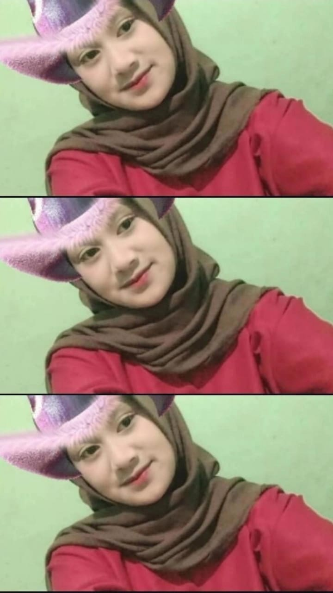

Dengan mengucap puji syukur kehadirat Tuhan Yang Maha Esa atas segala limapahan rahmat dan karunia-Nya sehingga kami dapat menyelesaikan sebuah makalah yang berjudul “Karya Tulis Ilmiah”.
Adapun maksud dibuatnya makalah ini adalah untuk memenuhi tugas Informatika Kelas XI C Semester 1.
Makalah ini disusun sebagai bentuk proses belajar mengembangkan kemampuan siswa. Kami menyadari dalam pembuatan makalah ini masih banyak kekurangan dan kesalahn, oleh karena itu kami mengharap kritik dan saran yang membangun dari semua pihak agar bisa menjadi bekal dalam pembuatan makalah ini, dapat bermanfaat bagi pembaca dan teman-teman, khusunya dalam memperluas wawasan dan ilmu pengetahuan tentang “Karya Tulis Ilmiah”.
Atas segala perhatiannya, kami ucapkan terimakasih.
Kegiatan menuangkan gagasan keilmuan dalam bahasa ilmiah sering dilakukan dalam setiap ilmiah, dalam kegiatan diskusi, seminar, symposium, loka karya, orasi dan sejenisnya. Sering tersaji komunikasi ilmiah baik dalam bentuk tulisan maupun lisan. Pada kegiatan ilmiah tersebut penyaji dituntut memiliki kemampuan untuk menyampaikan argument secara lisan yang dilengkapi pula dengan sajian argument keilmuan secara tertulis dalam bentuk karya tulis ilmiah. Selain itu siswa selalu dituntut menyampaikan argument dalam karya tulis ilmiah baik berupa artikel, laporan kajian, makalah, skripsi, ataupun tesis ataupun lainnya.
Untuk memberitahukan sesuatu hal secara logis dan sistematis kepada para pembaca. Karya ilmiah biasanya ditulis untuk mencari jawaban mengenai sesuatu hal dan untuk membuktikan kebenaran tentang sesuatu yang terdapat dalam objek tulisan. Maka sudah selayaknyalah, jika tulisan ilmiah sering mengangkat tema seputar hal-hal yang bru (aktual) dan belum pernah ditulis orang lain. Jikapun, tulisan tersebut sudah pernah ditulis dengan tema yang sama, tujuannya adalah sebagai upaya pengembangan dari tema terdahulu. Disebut juga dengan penelitian lanjutan. Tradisi keilmuan menuntut para calon ilmuan (siswa) bukan sekedar menjadi penerima ilmu. Akan tetapi sekaligus sebagai pemberi (penyumbang) ilmu.
Dengan demikian,tugas kami tidak hanya dapat bisa di baca, tetapi juga harus dapat menulis tentang tulisan-tulisan ilmiah. Apalagi bagi seorang pelajar sebagai calon ilmuan wajib menguasai tata cara menyusun karya ilmiah. Ini tidak terbatas pada teknik, tetapi juga praktik penulisannya. Kaum intelektual jangan hanya pintar bicara dan ”menyayi” saja, tetapi juga harus gemar dan pintar menulis. Istilah karya ilmiah disini adalah mengacu kepada karya tulis yang menyusun dan penyajiannya didasarkan pada kajian ilmiah dan cara kerja ilmiah. Dilihat dari panjang pendeknya atau kedalaman uraian, karya tulis ilmiah dibedakan atas makalah (paper) dan laporan penelitian.
Berdasarkan latar belakang diatas dapat dirumuskan masalah sebagai berikut:
Berdasarkan rumusan masalah diatas didaptkan tujuan penulisan sebagai berikut:
Karya tulis ilmiah ialah sebuah karya yang merupakan laporan maupun tulisan dengan menjabarkan hasil penelitian atau riset dari sebuah masalah. Sedangkan penelitian yang dilakukan bisa berupa kelompok maupun individu. Namun dalam meneliti juga harus mematuhi aturan-aturan serta kaidah ilmu yang sudah disepakati dan ditaati kalangan keilmuan. Sedangkan pengertian menurut para ahli sebagai berikut :
Menurut Brotowidjoyo, karya ilmiah merupakan karangan ilmu pengetahuan yang menampilkan fakta dan dibuat dengan menggunakan metodologi penulisan yang baik dan benar.
Menurut Eko Susilo M, karya ilmiah merupakan suatu tulisan ataupun karangan yang didapatkan sesuai dengan sifat keilmuannya dan didasari dari berbagai hasil pengamatan, penelitian, dan peninjauan terhadap bidang ilmu tertentu, yang disusun dengan menggunakan metode tertentu dengan memperhatikan sistematika penulisan yang baik dan santun, serta dapat dipertanggungjawabkan keilmiahannya.
Menurut Jones, karya ilmiah merupakan karan ilmiah yang ditunjukkan untuk masyarakat tetentu ataupun profesional yang biasanya bersifat karya ilmiah tinggi.
Menurut Hery Firman, karya ilmiah merupakan laporan berupa tulisan yang dipublikasi ataupun dipaparkan dari hasil pengkajian atau penelitian yang telah dilakukan, yang dalam penulisannya memperhatikan kaidah dan etika keilmuan yang berlaku di masyarakat keilmuan.
Menurut Drs. Totok Djuroto dan Dr. Bambang Supriyadi, pengertian karya ilmiah adalah serangkaian kegiatan penulisan yang berlandaskan pada hasil penelitian yang disusun secara sistematis mengikuti metodologi ilmiah, yang bertujuan untuk mendapatkan jawaban ilmiah dari suatu permasalahan.
Dari pengertian diatas dapat disimpulkan bahwa karya tulis ilmiah adalah sebagai hasil penelitian yang telah disusun dengan rinci serta sistemtis berdasarkan kaidah yang telah ditetapkan. karya tulis ilmiah merupakan suatu sajian bentuk karangan yang dinamis. Karya tulis ilmiah bukan sebuah “pake” keilmuan sehingga penyajiannya harus menuntut sesutu yang statis dari waktu ke waktu.
Tingkat keilmiahan sebuah karya tulis dapat diukur oleh keruntunan uraian yang tersaji dalam bentuk kebertamalian antaraspek yang terdapat dalam keterangan tersebut serta kebertalian antar bagiannya. Keterhubungan antarbagiannya sangat erat dan kentara jika diamati melalui sistematika penyajian tulisan yang logis. Apabila bagian landasan teoris bukan erupakan rangkaian teori yang digunakan untuk menjawab permasalahn atau untuk mendeskripsikan setiap aspek yang dikaji atau diteliti, bagian tersebut tidak berfungsi teori-teori yang melandasi suatu gagasan ilmiah.
Laporan penelitian adalah laporan ilmiah lengkap dari suatu penelitian setelah kegiatan penelitian berakhir, sebagai pertanggungjawaban ilmiah dan sebagai dokumen tertulis lengkap dari kegiatan penelitian. Dalam laporan penelitian, peneliti memaparkan berbagai langkah yang telah dilakukan selama penelitian dan apa saja hasil yang telah ditemukan dari kegiatan penelitiannya. Dengan demikian, laporan penelitian merupakan media bagi peneliti mengkomunikasikan pelaksanaan penelitian serta hasil-hasilnya kepada orang lain.
Makalah adalah salah satu produk karya ilmiah yang merupakan kajian tentang suatu masalah di lingkungan sekitar. Sehingga pembahasannya adalah keberadaan data dilapangan yang bersifat empiris objektif. Kajian yang termuat dalam makalah menggunakan pola pikir yang deduktif dan induktif. Pola pikir deduktif adalah cara berpikir yang ditangkap atau diambil dari pernyataan yang bersifat umum lalu ditarik kesimpulan yang bersifat khusus. Sedangkan pola pikir induktif adalah cara mempelajari sesuatu yang bertolak dari hal atau peristiwa khusus untuk menentukan hukum yang umum.
Makalah juga bisa diartikan sebagai karya akademis produk dari cara membuat karya tulis ilmiah yang diterbitkan pada suatu jurnal yang bersifat ilmiah. Salah satu karya ilmiah ini juga biasanya digunakan sebagai persyaratan ujian pada suatu mata pelajaran. Terlebih lagi, dalam dalam tugas tersebut biasanya siswa dituntut untuk memuat saran pemecahan tentang suatu secara ilmiah kedalam makalah mereka. Walau makalah adalah bentuk paling sederhana diantara karya tulis ilmiah lainnya, bahasa yang digunakan dalam makalah tetaplah bahasa yang tegas dan lugas.
Karya tulis disusun untuk mengungkapkan pendapat seorang penulis atas suatu fakta/data/ pendapat orang lain berdasarkan rangkainan logika tersendiri, tulisan lepas berisi opini seseorang yang mengupas tuntas suatu masalah tertentu untuk memberitahu (informatif), memengaruhi dan meyakinkan (persuasif argumentatif), atau menghibur khalayak pembaca (rekreatif).
Skripsi adalah istilah yang digunakan di indonesia untuk mengilustrasikan suatu karya tulis ilmiah berupa paparan tulisan hasil penelitian sarjana S1 yang membahas suatu permasalahan/fenomena dalam bidang ilmu tertentu dengan menggunakan kaidah-kaidah yang berlaku.
Skripsi bertujuan agar mahasiswa mampu menyusun dan menulis suatu karya ilmiah, sesui dengan bidang ilmunya. Mahasiswa yang mampu menulis skripsi dianggap mampu memadukan pengetahuan dan keterampilannya dalam memamhami, menganalisis, menggambarkan, dan menjelaskan masalah yang berhubungan dengan bidang keilmuan yang diambilnya. Skripsi merupakan persyaratan untuk mendapatkan status sarjana (S1) di setiap Perguruan Tinggi Negeri (PTN) maupun Perguruan Tinggi Swasta (PTS) yang ada di indonesia.
Tesis adalah pernyataan atau teori yang didukung oleh argumen yang dikemukakan dalam karya tulis ilmiah; untuk mendapatkan gelar kesarjanaan pada perguruan tinggi. Tesis juga dapat berarti sebuah karya tulis ilmiah resmi akhir seorang mahasiswa. Tesis merupakan bukti kemampuan yang bersangkutan dalam penelitian dan pengembangan ilmu pada salah satu bidang keilmuan dalam ilmu pendidikan sesuai ilmu yang telah dipelajari.
Disertasi merupakan karya tulis ilmiah untuk program doctor pada tingkat tertiggi di perguruan tinggi, dan isi dalam disertasi mengemukakan suatu dalil yang dibuktikan oleh penulis berdasarka data, fakta yang valid dengan melakukan analisis terperinci, dengan bahasa lain bahwa karya tulis ilmiah disertasi merupakan karya yang memuat teori baru dengan menguji hipotesis berdasarkan teori yang sudah ada sebelumnya yang dipaparkan, diskusi didalamnya yang memuat argumentasi serta sanggahan dari guru besar atau promoter penguji suatu lembaga pendidikan tinggi.
Karya disertasi memiliki karakteristik tersendiri agar dapat kita membedakan dengan tesis maupun karya ilmiah lain, disertasi memiliki fokus pada kajian mengenai satu disipin ilmu pendidikan sesuai dengan bidang yang dipelajari.
Ada beberapa hal mengenai ciri-ciri karya ilmiah itu sendiri. Diantaranya sebagai berikut:
Untuk struktur karya ilmiah sendiri cukup ketat, dan biasanya terdiri dari bagian awal (pendahuluan), bagian ini (pembahan), dan penutup.
Ada berapa variasi komponen karya ilmiah yang mesti sesui jenis karya ilmiah sendiri. Tapi semua karya ilmiah mengandung pendahuluan, pembahasan, penutup, dan daftar pustaka. Artikel mengenai karya ilmiah dalam jurnal mempersyaratkan adanya abstrak.
Sikap penulis karya ilmiah merupakan objektif, dengan penyampain gaya bahasanya impersonal. Pengunannya yang bentuk pasif tanpa menggunakan kata ganti orang pertama maupun kedua.
Dalam pembuatan karya ilmiah menggunakan bahasa yang baku dengan pilihan kata/istilah, dan kalimat-kalimat yang efektif dengan struktur yang baku.
Uraian singkat, jelas dan logis dari suatu kegiatan ilmiah untuk menjelaskan alasan teoritik serta faktual mengapa permasalahan tersebut perlu dijawab melalui kegiatan penelitian.
Pertanyaan kritis atau argumentasi yang refleksi yang diambil intinya dari pernyataan umum dari masalah penelitian, sebagaimana tercantum dalam latar belakang masalah. Rumusan masalah selalu dibuat dalam bentuk pertanyaan yang dapat dioperasikan dalam suatu penelitian.
Adalah uraian singkat jelas tentang tujuan apa yang hendak dicapai dalam penelitian tersebut.
Uraian tentang hasil karya ilmiah apa saja yang diunggulkan dan dapat disumbanga dari hasil penelitian.
Adalah seperangkat konsep batasan dan proposi yang dapat menyajikan suatu pandangan sistematis, tentang fenomena dalam penelitian dengan merinci hubungan antar variabel yang bertujuan menjelaskan serta mempredikdsikan fenomena tersebut.
Adalah kesimpulan sementara kerangka pemikiran seorang peneliti.
Definisi konsep adalah konseptual tentang variabel penelitian sedangkan definisi operasional variabel yang berisi penjelasan secara sistematik dan operasional tentang bagaimana mengukur variabel penelitian.
Populasi adalah keseluruhan dari subjek penelitian yang akan diteliti sedangkan sampel adalah sebagian subjek penelitian yang dijadikan penelitian.
Uraian lengkap dan jelas tentang jenis data yang digunakan dalam penelitian, serta bagaimana cara mengumpulkan data tersebut.
Penjelasan tentang bagaimana caranya pengolahan serta penganalisisan data penelitian dilakukan.
Uraian pemaparan data yang diperoleh dari lapangan penelitian untuk menguji apakah data yang didapat itu mendukung hipotesis yang ada atau tidak. Jika mendukung berarti diterima jika tidak berarti sebaliknya.
Pada tahap-tahap tertentu penulis dalam karya ilmiah perlu memperhatikan alur proses dalam memproduksi tulisannya melalui proses yang tidak singkat, akan tetapi perlu upaya yang dilakukan,diantaranya:
Perencanaan merupakan bagian yang tidak bisa dilepaskan bagi seorang penulis karya tulis ilmiah, karena dengan merencanakan sgala aspek dari apa yang akan dibahas dan dikaji ter-sampaikan dengan adanya perencanaan.
Maka dari itu alangkah baiknya sebelum menulis karya ilmiah lebih baik dituliskan rencana yang mau ditulis itu apa, (pilih topik masalah, rumusan tujuan, telusuri topik, identifikasi pembaca, dan tentukan cakupan atau ruang lingkup karya ilmiahmu sendiri).
Adapun bahan dari pengumpulan informasi dalam pembuatan karya ilmiah sebagai berikut ini:
Setelah direncanakan, selanjutnya adalah pelaksanaan yang harus dipersiapkan dengan baik diantara, menyiapkan bahan referensi yang cukup sesuai dengan tema yang akan dibahas itu apa, dan bagaimana pelaksanaan dalam membuat karya tulis ilmiah, seperti buku, jurnal ilmiah, prosiding, laporan ilmiah, semua memiliki petunjuk teknis yang berbeda, dan masing-masing dari kita dalam membuat karya ilmiah ditentukan oleh tujuan, termasuk pemenuhan tugas yang diberikan seperti halnya saat kuliah.
Apa perlukah evalusi dilakukan dalam membuat karya ilmiah, bagi penulis sangat perlu, karena dengan evaluasi dapat mengukur kemampuan kita untuk bisa menegerjakan, maupun menyelesaikan apa yang bisa kita lakukan dalam membuat karya ilmiah yang bagus, terutama bagi pemula atau yang akan memulai membeuat karya tulis ilmiah, dengan melakukan evaluas maka kita berarti ingin selalu melakukan perbaikan agar apa yang kita kerjakan menjadi terukur dan maksimal. Adapun evaluasi yang lebih utama ada (fokus, pembangunan, organisasi, gaya konvensi).
Langkah pertama dalam membuat karya ilmiah adalah membuat judul, judul yang diambil harus konkrit, tidak bias atau meluas serta menggambarkan ide dari hasil karya tulis ilmiah yang kita buat, untuk itu kita perlu menentukan tema terdahulu sebelum kita membuat judul karya tulis ilmiah.
Latar belakang masalah sudah menjadi memiliki pemahaman awal mengenai ulasan karya ilmiah yang kita buat, dalam isilatar belakang berkaitan dengan esensi idealist masalah, fakta masalah, data, analisis, solusi serat (state of the arts) penelitian terdahulu yang memperkuat masalah yang perlu dilakukan.
Rumusan masalah menjadi bagian terpenting dari penelitian yang melingkupi apa yang mau diteliti serta dikaji dari karya ilmiah yang kita buat, yang merumuskan masalah ialahdengan menghadapkan sebuah hal yang ideal terhadap realitas yang terjadi di lapangan, maka yang harus diperhatikan ialah memperhatikan apa yang mau dibuat serta dilakukan untuk dipecahkan masalahnya.
Pada rumusan masalah kata Tanya yanng lain efektif ialah dengan tiga hal yang paling penting untuk merumuskan masalah tersebut ialah apa, mengapa dan bagaimana, tiga kata tersebut sudah mewakili apa yang mau dicari serta dibongkar.
Untuk karya ilmiah yang perlu di persiapkan penulis adalah memberikan analisis bahasan yang dilakukan untuk memperkuat argumentasi dan diskusi ilmiah yang dilakukan yang kita buat, caranya dengan menerapkan beberapa hal ideal dengan fakta yang pastinya ada beberapa faktor yang mempengaruhi maupun menghalanginya.
Cara membuat karya tulis ilmiah yang paling akhir dan terpenting adanya kesimpulan yang diberikan untuk membuat pembaca memahami maksud dari apa yang diteliti maupun dibuat dari tulisan, sehingga paham akan tujuan karya yang ditulis tersebut.
Karya tulis ilmiah adalah sebagai hasil penelitian yang telah disusun dengan rinci serta sistematis berdasarkan kaidah yang telah ditetapkan. Dikalangan pelajar, karya tulis ilmiah ini juga biasa disebut dengan scientific paper. Ada beberapa hal menegnai ciri-ciri karya ilmiah itu sendiri. Diantaranya yaitu; struktur sajian, komponen dan substansi, sikap penulis, dan penggunaan bahasa. Adapun sistematika dalam penyusunan karya tulis ilmiah yaitu terdiri dari Bab 1 pendahuluan, Bab 2 kerangka teori, Bab 3 metodeologi penelitian, Bab 4 hasil pembahasan penelitian, Bab 5 penutup. Jenis-jenis karya tulis ilmiah yaitu makalah, kertas kerja, skripsi, tesis dan disertasi.
Terdapat 8 tahap dalam penyusunan karya tulis ilmiah, diantaranya yaitu: tahap persipan dan perencanaan, tahap pengumpulan informasi, tahap pelaksanaa draf, tahap menulis draf, tahap revisi, tahap penyuntingan, tahap publikasi, dan tahap evaluasi. Adapun strategi dan teknik dalam menyusun karya tulis ilmiah yang baik yaitu: membuat judul karya ilmiah, memberikan isi latar belakang yang bagus, membuat rumusan masalah, membuat pembahasan yang sederhana dan sesuai dengan variabel judul, membuat kesimpulan.
Pembahasan mengenai ruang lingkup materi ini sangat penting, khususnya mahasiswa sebagai calon ilmuan. Karena itu, kami berharap dapat digunakan dengan sebaikbaiknya, selain itu, dalam penulisan makalah ini masih terdapat kekurangan dan kesalahan, baik dari segi penulisan maupun dari segi penyusunan kalimatnya serta dari segi isi juga masih perlu ditambahkan. Oleh karena itu, kami sangat mengharapkan pada para pembaca makalah ini juga dapat memberikan kritikan dan masukan yang membangun.
Fahri Abdilah, 2017. Sistematika Karya Tulis Ilmiah
https://blog.ruangguru.com/sistematika-karya-tulis-ilmiah?hs_amp=true#referrer=https://www.google.com.Diakses pada 20 September 2020 pukul 21.00
Pak Dosen, 2020.karya Ilmiah
https://dentmasoei.com/karya-ilmiah/.Diakses pada 19 Sepetember 2020 pukul 20.35
Sevima, 2020. Pengertian Karya Tulis Ilmiah Menurut Para Ahli da Jenis-jenis Karya Tulis Ilmiah
https://sevima.com/pengertian-karya-ilmiah-menurut-para-ahli-danjenis-jenis-karya-ilmiah/Diakses pada 19 september 2020 pukul 20.31Sevima, 2020. Panduan Cara Membuat Karya Tulis Ilmiah Lengkap
https://sevima.com.%9A-panduan-cara-membuat-karya-tulis-ilmiah-lengkap/.